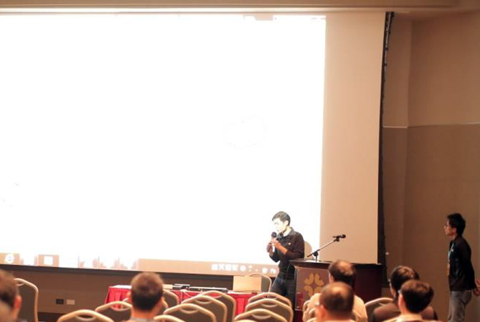
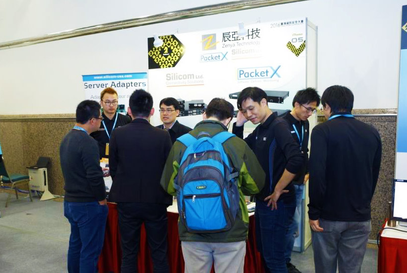

PacketX(瑞擎數位)產品GRISM可協助企業與電信公司打造監測網路，進而使網路資安設備的效益極大化；
於2016台灣資安大會, PacketX不但參與此資安界的年度盛會,同時獲邀於現場展示GRISM的高階應用
(A)基於封包應用層辨識為基礎的intelligent partially bypass 如何bypass多媒體流量如Youtube進入IPS
(B)敏感資料遮罩:將封包中含有敏感資訊的區塊以其他數值取代, 現場展示如何將DB query傳回值中夾帶的身分證字號予以遮罩(英文字母與數字均用"X"取代)
如此非但不影響資安設備對封包的處理, 且可杜絕於監測封包時導致敏感資料外洩的疑慮
Tony Wang
Dig out Values from Packets
PacketX Technology
Bypass與NPB技術進化與探討
辰亞科技 創辦人 黃麒峰
Bypass與NPB技術進化與探討
辰亞科技 創辦人 黃麒峰
監測網路再進化智慧旁路(intelligent bypass)與敏感資料遮罩
PacketX 技術長 王騰嶽

監測網路再進化智慧旁路(intelligent bypass)與敏感資料遮罩
PacketX 技術長 王騰嶽

攤位05 辰亞科技、Silicom、PacketX
攤位05 辰亞科技、Silicom、PacketX
攤位05 辰亞科技、Silicom、PacketX

攤位05 辰亞科技、Silicom、PacketX